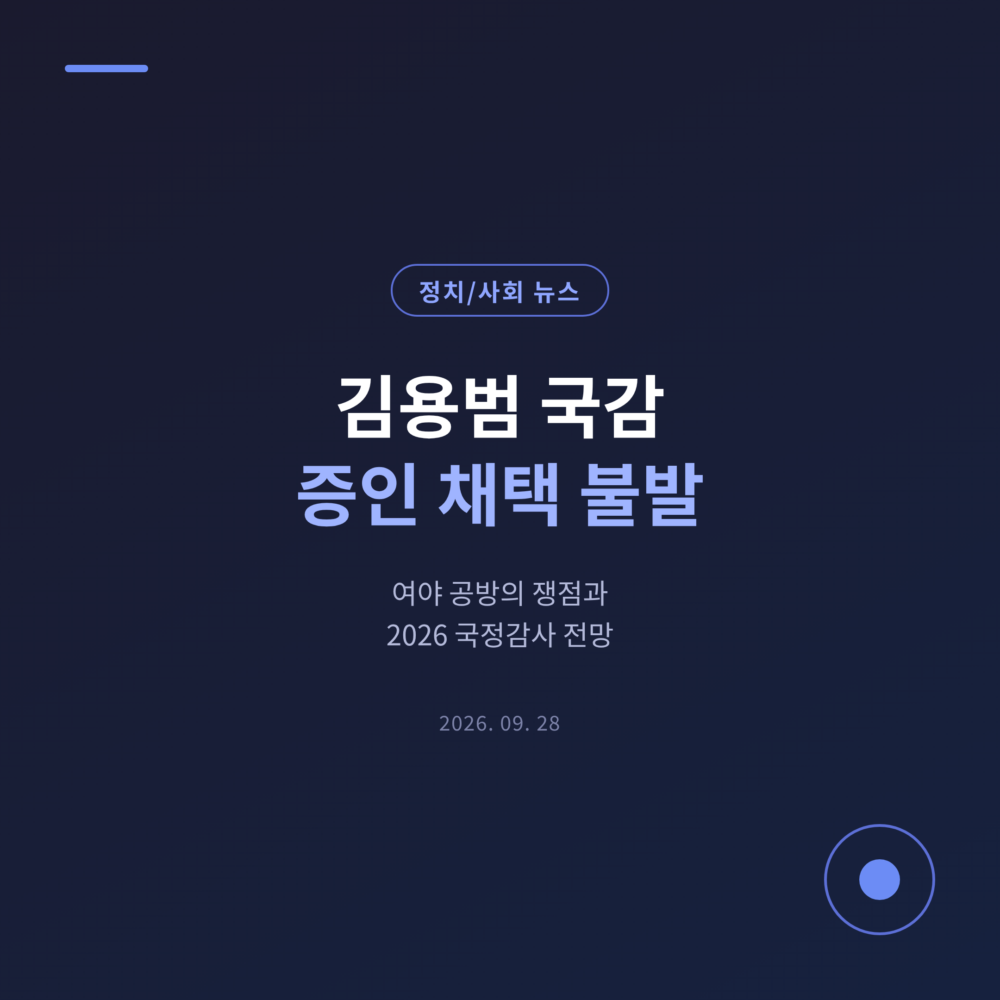
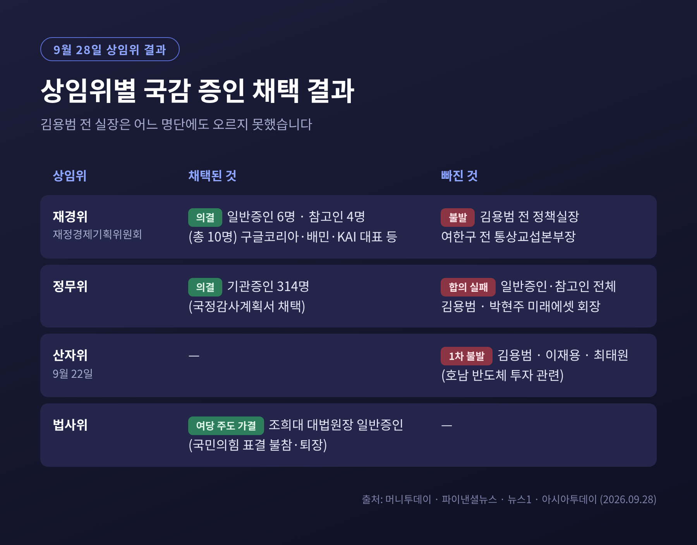
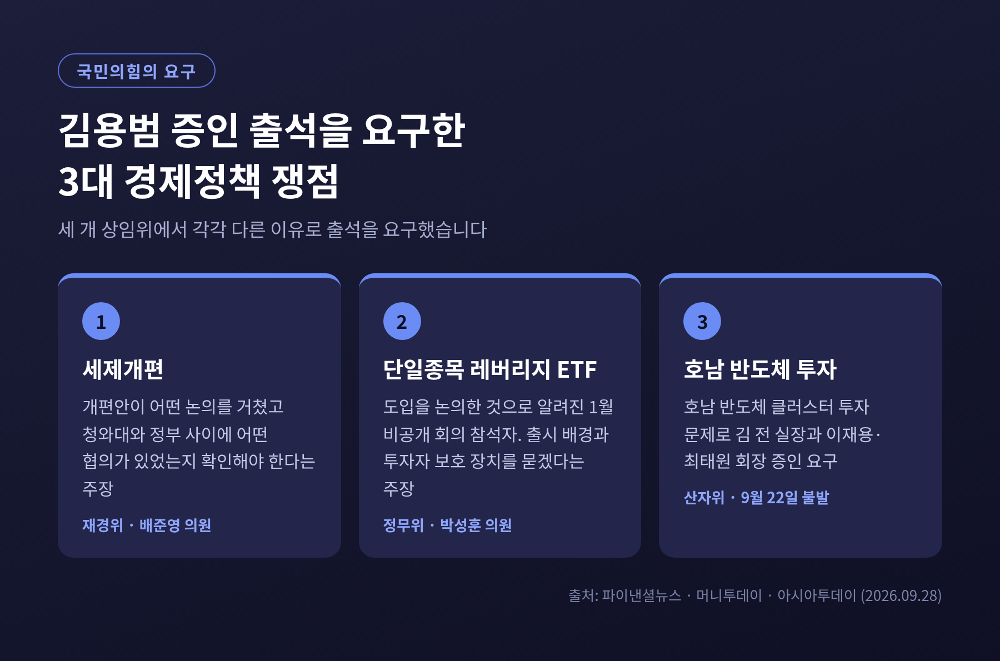
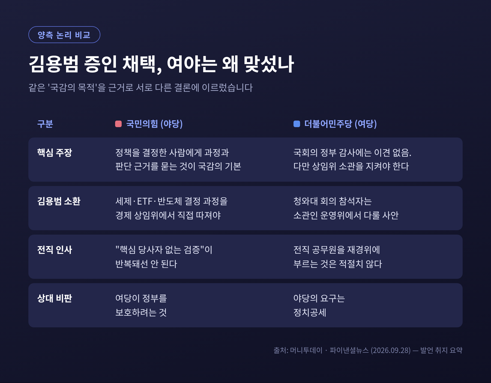
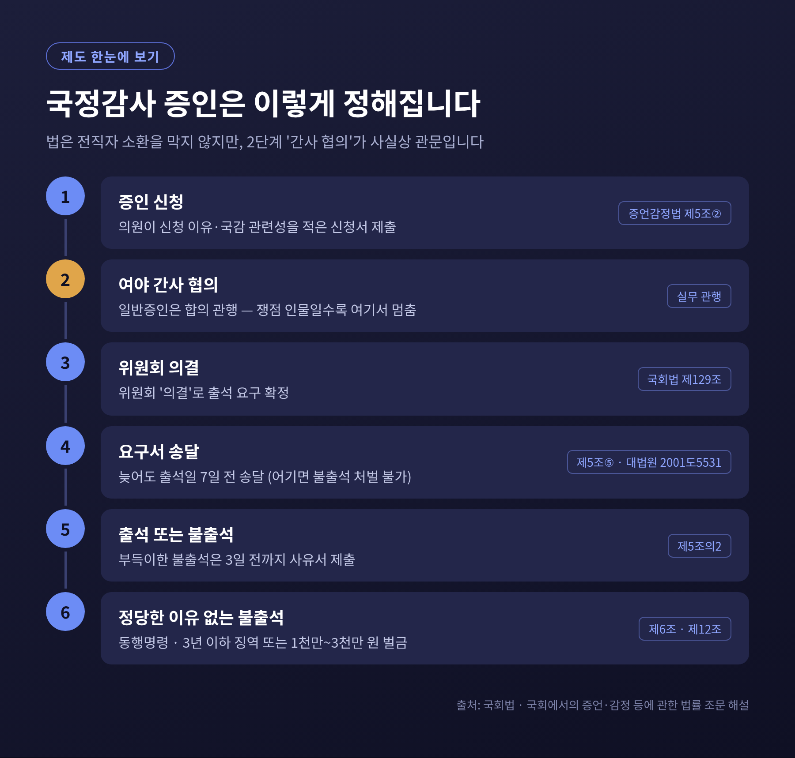
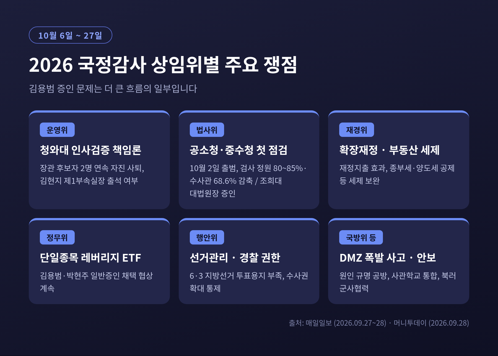
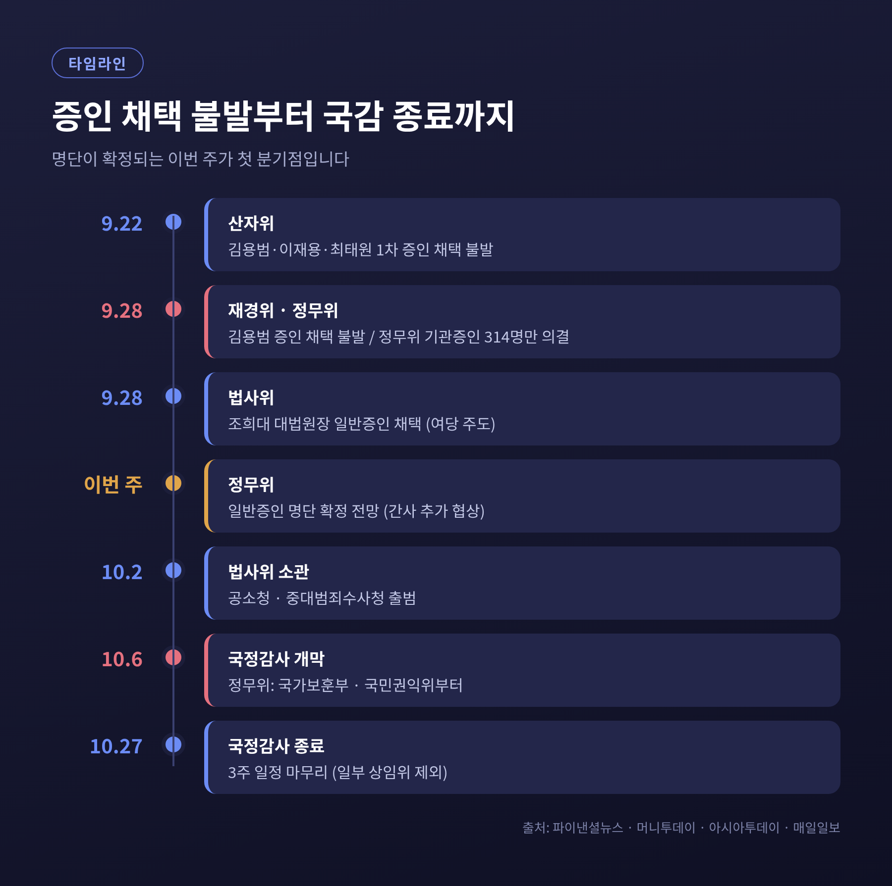

김용범 국감 증인 채택 불발, 여야 공방의 쟁점과 앞으로의 전망

오늘은 2026년 국정감사를 앞두고 불거진 김용범 전 청와대 정책실장 증인 채택 불발 사안을 정리해 보겠습니다.
무슨 일이 있었는지, 여야가 각각 무엇을 근거로 맞서는지, 앞으로 어떤 흐름이 예상되는지 차례로 살펴봅니다.
3줄 요약9월 28일 재경위와 정무위 모두 김용범 전 정책실장을 국감 증인 명단에 올리지 못했습니다.국민의힘은 경제정책 결정 과정을 따져야 한다고, 더불어민주당은 소관 상임위가 아니라고 맞섰습니다.국정감사는 10월 6일부터 27일까지 열리며, 추가 협상 결과가 남은 변수입니다.
■ 9월 28일, 상임위에서 무슨 일이 있었나
이날 국회 경제 상임위 두 곳이 국감 증인 명단을 처리했습니다.
결과는 비슷했습니다. 김용범 전 실장의 이름은 어느 명단에도 없었습니다.
재정경제기획위원회(재경위)는 일반증인 6명과 참고인 4명, 모두 10명의 출석요구안만 먼저 의결했습니다.
윤구 구글코리아 사장, 김범석 우아한형제들(배달의민족 운영) 대표, 김종출 한국항공우주산업(KAI) 사장 등이 이름을 올렸습니다.
김 전 실장과 여한구 전 통상교섭본부장은 빠졌습니다. (출처: 머니투데이, 파이낸셜뉴스)
정무위원회는 피감기관 소속 기관증인 314명의 출석요구만 의결했습니다.
기업인 등 일반증인과 참고인은 합의하지 못했습니다.
김 전 실장과 박현주 미래에셋그룹 회장의 채택 여부가 걸림돌이었습니다. (출처: 뉴스1, 머니투데이, 아시아투데이)
앞서 9월 22일 산업통상자원중소벤처기업위원회에서도 김 전 실장의 1차 증인 채택은 불발됐습니다. (출처: 파이낸셜뉴스)
한편 9월 28일 법제사법위원회에서는 여당 주도로 조희대 대법원장이 일반증인으로 채택됐습니다.
한쪽은 막히고, 다른 한쪽은 표결로 처리된 셈입니다.

■ 왜 하필 김용범인가 — 국민의힘의 논리
김용범 전 실장은 이재명 정부 초기 정책 컨트롤타워로 꼽히던 인물입니다. (출처: 머니투데이)
국민의힘은 세 갈래 경제정책의 결정 과정을 묻겠다며 여러 상임위에서 출석을 요구했습니다.
첫째는 세제개편입니다.
재경위 야당 간사 배준영 국민의힘 의원은 개편안이 어떤 논의를 거쳤고, 청와대와 정부 사이에 어떤 협의가 있었는지 확인해야 한다고 밝혔습니다.
그는 "핵심 당사자가 없는 검증"이 반복돼선 안 된다고 강조했습니다. (출처: 파이낸셜뉴스)
둘째는 단일종목 레버리지 상장지수펀드(ETF)입니다.
삼성전자·SK하이닉스 같은 한 종목의 등락을 몇 배로 따라가는 상품입니다.
김 전 실장은 이 상품 도입을 논의한 것으로 알려진 지난 1월 비공개 회의 참석자 중 한 명입니다. (출처: 파이낸셜뉴스)
박성훈 의원은 상품 출시 배경과 개인 투자자 피해를 줄일 장치가 논의됐는지 밝혀야 한다고 말했습니다. (출처: 머니투데이, 아시아투데이)
셋째는 호남 반도체 클러스터 투자입니다.
산자위에서 국민의힘은 이 문제로 김 전 실장과 이재용 삼성전자 회장, 최태원 SK그룹 회장 등을 증인으로 요구했습니다. (출처: 파이낸셜뉴스)
국민의힘은 여당의 반대를 두고 "정부를 보호하려는 것"이라고 비판합니다. (출처: 머니투데이, 박수영 의원)

■ 더불어민주당은 왜 반대하나
더불어민주당도 국회의 정부 견제 자체를 부정하지는 않습니다.
재경위 여당 간사 오기형 의원은 "국회가 정부에 대해 감사해야 한다는 점에는 이견이 없다"고 했습니다. (출처: 머니투데이)
쟁점은 '어느 상임위가 부를 것인가'입니다.
오 의원은 청와대 회의 참석자라면 청와대 비서실·정책실을 담당하는 운영위원회에서 다루는 것이 맞다고 봤습니다.
전직 공무원을 재경위로 부르는 것도 적절하지 않다는 입장입니다.
여한구 전 본부장 역시 산자위에서 풀 문제라고 반박했습니다. (출처: 머니투데이, 파이낸셜뉴스)
정무위에서 민주당은 국민의힘의 증인 요구를 '정치공세'로 규정했습니다. (출처: 머니투데이)
전 청와대 인사를 여러 상임위가 제각각 부르는 데 난색을 보인 셈입니다.
양쪽 논리를 나란히 놓으면 이렇습니다.
국민의힘은 정책을 결정한 사람에게 과정을 묻는 것이 국감의 기본이라고 봅니다.
민주당은 상임위 소관과 절차를 지켜야 국감이 정쟁으로 흐르지 않는다고 봅니다.
둘 다 국감의 본래 목적을 근거로 들고 있다는 점이 흥미롭습니다.

■ 증인 채택은 어떻게 정해지나
국회법 제129조는 위원회가 "그 의결로" 증인 출석을 요구할 수 있다고 정합니다.
결국 상임위 의결이 있어야 하고, 실무에서는 여야 간사 협의가 사실상 관문입니다.
절차도 촘촘합니다.
국회증언감정법에 따르면 의원은 증인 신청 이유와 국감과의 관련성을 적은 신청서를 내야 합니다.
출석요구서는 늦어도 출석일 7일 전에 송달돼야 합니다.
대법원은 이 기간을 지키지 못한 요구에는 불출석해도 처벌할 수 없다고 봤습니다. (출처: 국회증언감정법 조문 해설, 대법원 2001도5531)
정당한 이유 없이 나오지 않으면 동행명령을 받을 수 있습니다.
3년 이하 징역이나 1천만~3천만 원 벌금의 처벌 규정도 있습니다. (출처: 국회증언감정법 제6조·제12조)
공무원이었던 사람도 직무상 비밀을 이유로 증언을 거부할 수 없습니다. (출처: 같은 법 제4조)
법은 전직자 소환을 막지 않습니다.
다만 누구를 부를지는 여야 합의라는 관행에 크게 기대고 있습니다.
기관증인은 대부분 합의로 처리되지만, 일반증인에서 자주 멈추는 이유가 여기에 있습니다.

■ 처음 있는 일은 아닙니다
대통령실 핵심 인사의 증인 출석을 두고 여야가 맞선 장면은 지난해에도 있었습니다.
2025년 10월 29일 운영위원회는 대통령실 기관증인만 의결했습니다.
김현지 당시 제1부속실장의 일반증인 채택은 끝내 불발됐습니다. (출처: 경향신문)
당시 민주당은 오전에만 출석하는 방안을 내놨고, 국민의힘은 이를 거부했습니다.
국민의힘은 증인 출석이 관례였던 총무비서관 자리에서 국감 직전 보직이 바뀐 점을 문제 삼았습니다.
민주당은 "국감을 정쟁의 장으로 만들겠다는 것"이라고 반박했습니다. (출처: 경향신문)
예전엔 '누구를 부를지'가 국감 준비의 한 과정이었습니다.
지금은 증인 명단 자체가 국감의 첫 번째 전선이 됐습니다.
올해 운영위에서도 김현지 제1부속실장의 출석 여부가 다시 쟁점으로 꼽힙니다. (출처: 매일일보)
■ 2026 국정감사, 김용범만의 문제가 아니다
올해 국감은 10월 6일부터 27일까지 3주 동안 열립니다. (출처: 매일일보)
김용범 전 실장 문제는 더 큰 흐름의 일부입니다.
운영위에서는 청와대 인사검증 책임론이 쟁점입니다.
김승원 법무부 장관 후보자와 용혜인 성평등가족부 장관 후보자가 잇따라 자진 사퇴했기 때문입니다. (출처: 매일일보)
법사위는 10월 2일 출범하는 공소청·중대범죄수사청(중수청)을 처음으로 점검합니다.
정부는 공소청 검사 규모를 현행 정원의 80~85% 수준으로 줄이고, 수사관 인력은 68.6% 감축하기로 했습니다. (출처: 매일일보)
조희대 대법원장의 대법관 재제청 거부 문제도 걸려 있습니다.
여당은 거부 과정을 직접 물어야 한다는 입장이고, 국민의힘은 오히려 대통령을 불러야 한다며 맞섭니다. (출처: 머니투데이)
DMZ 폭발 사고를 두고도 공방이 이어집니다.
국민의힘은 현장 조사 지연과 은폐 의혹을 제기하고, 민주당은 조사 결과가 나오기 전 정치 공세를 멈추라고 촉구했습니다. (출처: 매일일보)
재경위에서는 확장재정 기조와 부동산 세제가, 행안위에서는 6·3 지방선거 투표용지 부족 사태와 경찰 권한 통제가 다뤄질 전망입니다. (출처: 매일일보)

■ 앞으로 무엇을 지켜봐야 하나
정무위는 여야 간사 추가 협상을 이어가기로 했습니다.
국감이 10월 6일 시작하는 만큼 늦어도 이번 주 안에 명단이 확정될 것이라는 관측이 나옵니다. (출처: 아시아투데이)
재경위도 간사 협의 뒤 추가 의결 여지는 남겨뒀지만, 사실상 불발로 보는 보도도 있습니다. (출처: 파이낸셜뉴스)
지켜볼 대목은 세 가지입니다.
- 정무위 일반증인 명단에 김 전 실장과 박현주 회장이 들어가는지
- 민주당이 제시한 '운영위 소관' 논리대로 운영위에서 청와대 정책 결정 과정을 다룰지
- 증인 없이 열리는 경제 상임위 국감에서 기관증인 질의로 쟁점이 얼마나 규명될지
한계도 분명합니다.
증인이 출석하더라도 정책 판단의 옳고 그름이 국감 한 번으로 가려지기는 어렵습니다.
출석하지 않는다면 의혹과 반박만 평행선을 그릴 가능성이 큽니다.

정리하면 이렇습니다.
김용범 전 실장 증인 채택 불발은 한 사람의 출석 문제가 아니라, 국감에서 '누가 무엇을 답할 것인가'를 둘러싼 여야의 오랜 줄다리기입니다.
국민의힘은 결정의 과정을, 민주당은 절차의 질서를 앞세웁니다.
"누구를 부르느냐보다, 무엇을 묻고 무엇을 답하느냐가 국감의 무게를 정합니다."
이번 국감이 그 기대에 답할 수 있겠냐고 물으신다면, 명단이 확정되는 이번 주를 먼저 지켜봐야 한다고 답하겠습니다.